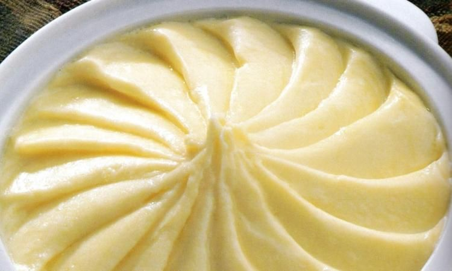

Purée de pomme de terres de Joel Robuchon

Description
Joel Robuchon is a famous french chef with multiple Michelin star's to his own name. He is mostly known for his potato puree which is very creamy and delicious.
This recipe is very delicious and almost feels like you are eating in a fancy restaurant.
Ingredients (for 4-5 pers)
- 1 kg of russet potatoes
- 250g of butter (usually just 1/4th of the potatoes' weight but you can put less if you desire)
- Some nutmeg powder
- 10cl of whole milk (1/10th of the potatoes' weight but you can put more or less if you desire)
- Coarse salt
- Crushed black pepper
Steps
- Start first by putting the butter at room temperature so it's easier to cut.
- Boil some water in a big pot. (around 1/2 of the pot)
- Peel the potatoes and cut them in quarters.
- Once the water boils, put some coarse salt inside the water and put your potatoes in.
- The secret is to boil them until you feel like they are going to break apart. You can test if they are ready by forking them every 5 minutes, and if the potato falls easily of the fork then it's ready to be drained.
- Once they are drained, mash them with the adequate tool.
- Cut the butter into small cubes.
- Heat the pot back up again to low heat and immediatly pour in your potatoes. Add the butter slowly until all is mixed.
- Then, add your milk in slowly while you mix. Add more to your desiring.
- Add a dash of nutmeg powder (this thing has very strong taste so make sure you taste before adding more)
- Finally, add salt and pepper to taste.
- Chef Robuchon does this very famous presentation thing with his puree and makes it go through a mesh but we aren't going to bother with that. You can search online if you want to do that.
- Add some coarse salt in the plate and enjoy !